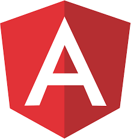
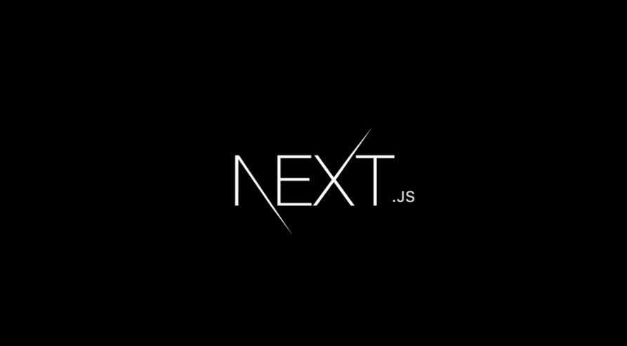
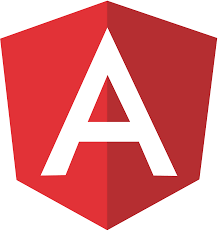
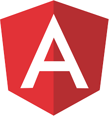

Frontend Technoogies


Backend Technologies

 is used to style and layout web pages — for example, to alter the font, color, size, and spacing of your content, split it into multiple columns, or add animations and other decorative features")

 
